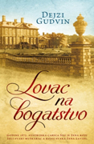

Lovac na bogatstvo
Dejzi Gudvin
Godine 1875. austrijska carica Sisi je žena koju želi svaki muškarac a kojoj svaka žena zavidi. Šarlot Berd je bogata naslednica koju tek uvode u društvo. Ne snalazi se najbolje u tesnim stegama puritanskih strogih pravila i odušak pronalazi u novom hobiju – fotografiji, umetnosti koja još uvek izaziva sumnjičavost u visokim krugovima.
Dejzi Gudvin
Godine 1875. austrijska carica Sisi je žena koju želi svaki muškarac a kojoj svaka žena zavidi. Šarlot Berd je bogata naslednica koju tek uvode u društvo. Ne snalazi se najbolje u tesnim stegama puritanskih strogih pravila i odušak pronalazi u novom hobiju – fotografiji, umetnosti koja još uvek izaziva sumnjičavost u visokim krugovima.
1199.00
Kofer gospođe Sinkler
Luiz Volters
Roberta radi u knjižari i voli da sakuplja pisma i razglednice koje nalazi u polovnim knjigama. Kad joj otac jednog dana donese knjige koje su pripadale njenoj babi, među njima nađe zbunjujuće pismo od davno stradalog dede koje je datirano u vreme kad bi trebalo da je on već poginuo.
Luiz Volters
Roberta radi u knjižari i voli da sakuplja pisma i razglednice koje nalazi u polovnim knjigama. Kad joj otac jednog dana donese knjige koje su pripadale njenoj babi, među njima nađe zbunjujuće pismo od davno stradalog dede koje je datirano u vreme kad bi trebalo da je on već poginuo.
1299.00
Kuća sećanja i zaborava
Filip David
Albert Vajs je još od detinjstva imao prilike da promeni svoj identitet. Nakon što je 1942. godine pod okriljem užasnog rata ostao bez roditelja i brata Elijaha, neko vreme je proveo u kući folksdojčera koji ga nazivaju Hans i nude mu da zameni njihovog nestalog sina i tako se spase od sigurne smrti.
Filip David
Albert Vajs je još od detinjstva imao prilike da promeni svoj identitet. Nakon što je 1942. godine pod okriljem užasnog rata ostao bez roditelja i brata Elijaha, neko vreme je proveo u kući folksdojčera koji ga nazivaju Hans i nude mu da zameni njihovog nestalog sina i tako se spase od sigurne smrti.
900.00
Đavolov osmeh
Andeli Venderberg
London krajem 19. veka. Grad koji redovno pustoše epidemije i u kom desetine hiljada ljudi žive u najgorem siromaštvu. Kada u gradskom vodovodu bude otkrivena žrtva kolere, doktor Anton Kronberg, vodeći engleski bakteriolog, zaključiće da je čovek namerno zaražen smrtonosnom bakterijom.
Andeli Venderberg
London krajem 19. veka. Grad koji redovno pustoše epidemije i u kom desetine hiljada ljudi žive u najgorem siromaštvu. Kada u gradskom vodovodu bude otkrivena žrtva kolere, doktor Anton Kronberg, vodeći engleski bakteriolog, zaključiće da je čovek namerno zaražen smrtonosnom bakterijom.
2199.00
Davno zaboravljena pesma
Ketrin Veb
Engleska 1937. godine. U selu Bleknol na dorsetskoj obali, četrnaestogodišnja Mici Hačer odrasta u divljoj i usamljeničkoj atmosferi. Kako je susedi izbegavaju, dolazak čuvenog slikara Čarlsa Obrija, njegove ljubavnice i njihovih ćerki donosi dah svežine. Naredna tri leta, kao Čarlsova muza, Mici razvija duboku i trajnu vezu s Obrijevima.
Ketrin Veb
Engleska 1937. godine. U selu Bleknol na dorsetskoj obali, četrnaestogodišnja Mici Hačer odrasta u divljoj i usamljeničkoj atmosferi. Kako je susedi izbegavaju, dolazak čuvenog slikara Čarlsa Obrija, njegove ljubavnice i njihovih ćerki donosi dah svežine. Naredna tri leta, kao Čarlsova muza, Mici razvija duboku i trajnu vezu s Obrijevima.
1999.00